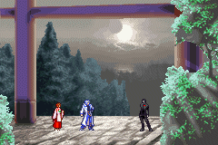
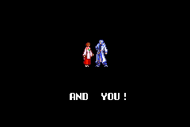
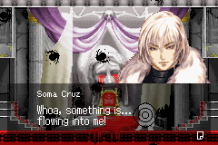
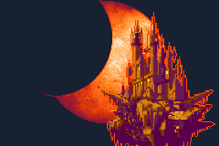
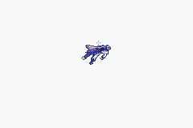
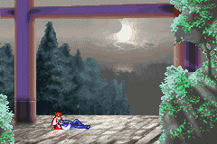
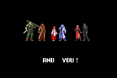
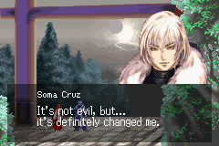
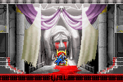
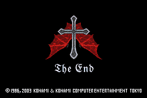

|
Ending
Normal Ending
หากปราบ Graham ได้ โดยไม่ได้สวมใส่โซลที่ทำให้กลายเป็น Dracula
Soma จะกลับออกมาพร้อมทั้ง Mina และ Arikado
แต่ Soma กลับรู้สึกว่า ปราสาทยังคงเรียกร้องเขาอยู่


Good Ending
เมื่อ Soma ปราบ Graham ได้โดยสวมใส่โซลที่มีพลังเหมือน Dracula
เขาจะรู้ตัวว่าเขาคือ ผู้ที่ถูกเลือก ให้กลายเป็นร่างให้ Dracula สิงสู่
พลังต่างๆ ที่ Graham รวบรวมไว้ จะหลั่งไหลไปยังตัวของ Soma

ดังนั้นแล้ว หาก Soma ไม่ต้องการที่จะกลายไปเป็น Dracula
เขาจำเป็นต้องไปทำลายแกนกลางของปราสาท
ก่อนที่พลังต่างๆ ของ Dracula จะหลั่งไหลเข้าไปในตัวของ soma จนเต็ม
โดยแหล่งพลังงานนั้นก็คือ Chaos
เมื่อทำลายแล้ว พลังของ Dracula ก็หายไป รวมทั้งปราสาทก็พังทลายลงด้วย
แล้วสุริยคราส ก็จบลง




Good Ending With All Soul
ฉากคำพูดระหว่าง Soma และ Mina จะเปลี่ยนแปลงไปเล็กน้อย
หากเก็บโซลได้ครบ Mina จะสังเกตุเห็นความเปลี่ยนแปลงของ Soma
นั่นคือ Soma มีความใจเย็นเพิ่มมากขึ้น (เป็นผู้ใหญ่ขึ้นนั่นเอง)
(มีบทพูดเพิ่มขึ้น และบทพูดบางคำเปลี่ยนแปลงไป)

(ตัวอย่างคำพูดที่แตกต่างกัน)
Bad Ending
Soma พ่ายแพ้แก่ Chaos ทำให้จิตใจของเขาสับสน และกลายเป็น Dracula เต็มตัว
ดังนี้ Julius จึงต้องมาทำตามสัญญาที่ให้ไว้ นั่นก็คือ ฆ่าเขาซะ

The End

|